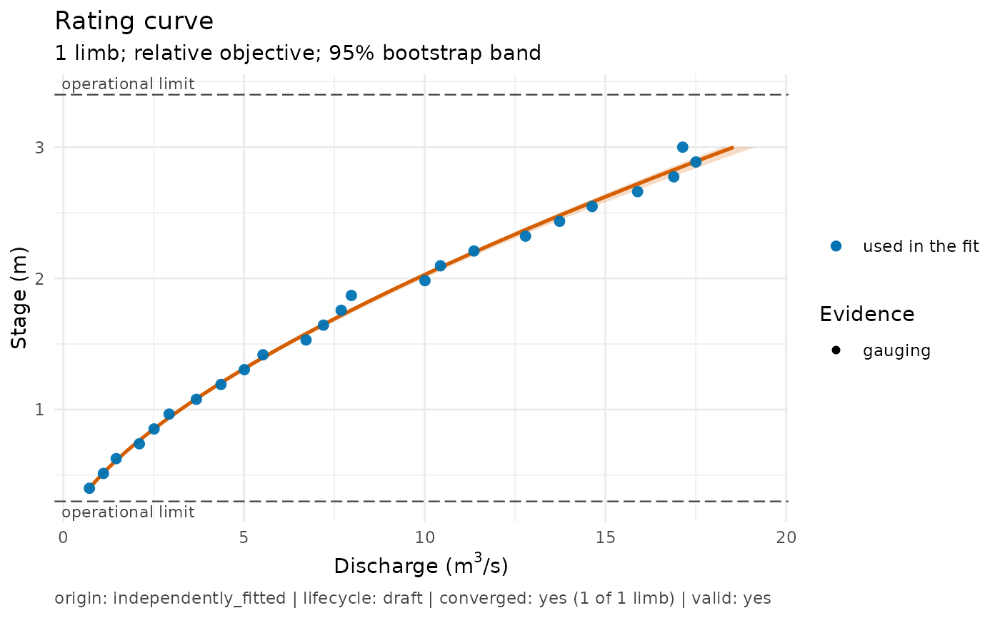
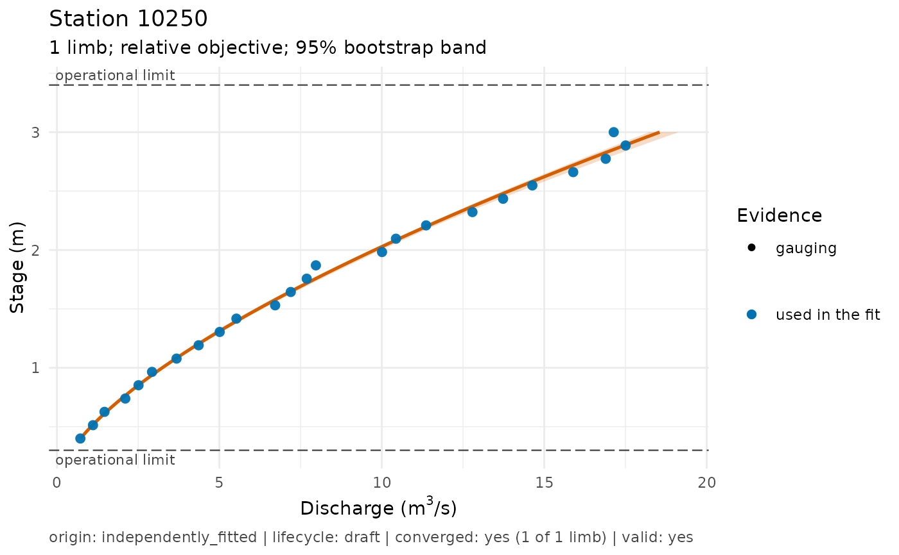

autoplot() and plot() draw a rating with one grammar for every rating
class and return a ggplot2 object, so the plot can be added to, themed or
saved like any other. They give the same plot; autoplot() is the
ggplot2 convention and plot() is what you reach for first. autoplot() is
re-exported, so it works without attaching ggplot2.
What is on the plot:
the gaugings, shaped by
source_type(a circle for a gauging, other shapes for modelled, cross-section, structure and operational-rating evidence) so evidence that is not a measurement cannot be mistaken for one; rows excluded from the fit are drawn grey, smaller and fainter, never hidden;the curve, with the interior breakpoints marked faintly;
a 95% band from the bootstrap draws, if the fit made them (the caption and subtitle say so; there is no band to draw otherwise);
the stage ranges the rating rests on: a green tint over the range of modelled evidence and a grey one where the curve is fitted but no evidence lies (see
rating_support()), and the operational limits as dashed lines if stated;units on the axes, with discharge on the horizontal axis and stage on the vertical, the hydrological convention;
the rating's status in the caption: how it was made, where it stands in review, whether it converged and whether it is valid (see
rating_invariants()).
The curve is evaluated directly, so a rating that fails its invariants can still be drawn, which is how you find out why.
An equation table has no evidence, so only the curve and the status are
drawn. autoplot() also works on a FlodeAssessment and a
FlodeSensitivity.
Arguments
- object, x
A FlodeRating, FlodeSegmentedRating or FlodeRatingTable (or, for
autoplot(), a FlodeAssessment or FlodeSensitivity).- n_points
Number of stages per limb at which the curve is drawn. Default 200.
- band
Logical. Draw the bootstrap band if the fit has one. Default
TRUE.- support
Logical. Shade the stage ranges the rating does and does not rest on, and draw operational limits. Default
TRUE.- y
Unused, present for the
plot()generic.- ...
Unused.
Details
rating_plot() is superseded by this plot. It still works, but draws with
base graphics, offers none of the above, and will warn in a later release.
See also
rating_support(), rating_invariants(), plot_rating_curves()
to compare several ratings, plot_rating_residuals()
Examples
set.seed(1)
stage_m <- seq(0.4, 3, length.out = 24)
gaugings <- data.frame(stage_m = stage_m,
discharge_cms = 3.2 * stage_m^1.6 * exp(rnorm(24, sd = 0.04)))
fit <- fit_rating(gaugings, n_boot = 40, seed = 1, quiet = TRUE,
operational_limits = c(0.3, 3.4), operational_basis = "gauged range plus margin")
autoplot(fit)

# The same plot from plot(), which can be added to like any ggplot.
plot(fit) + ggplot2::labs(title = "Station 10250")
